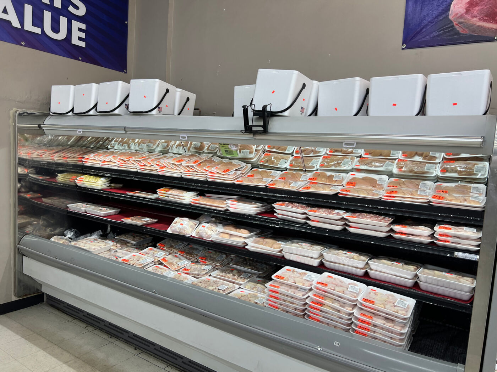
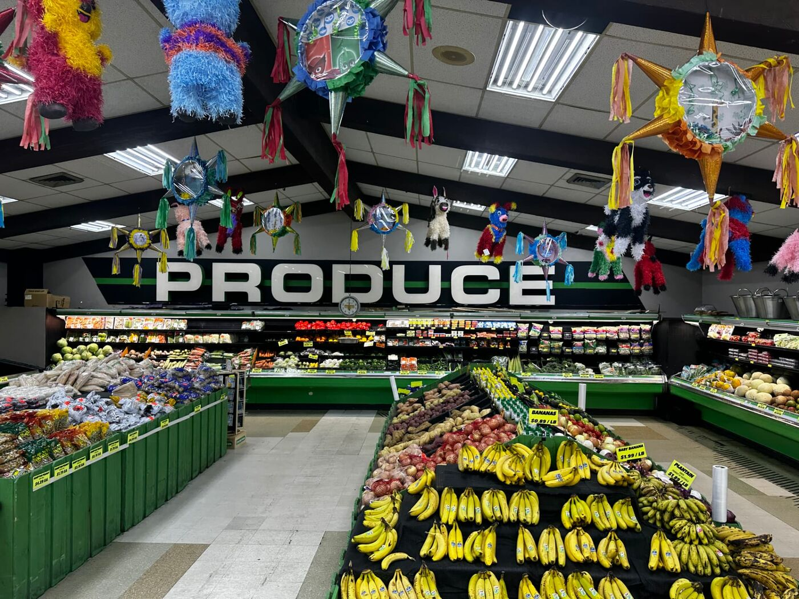
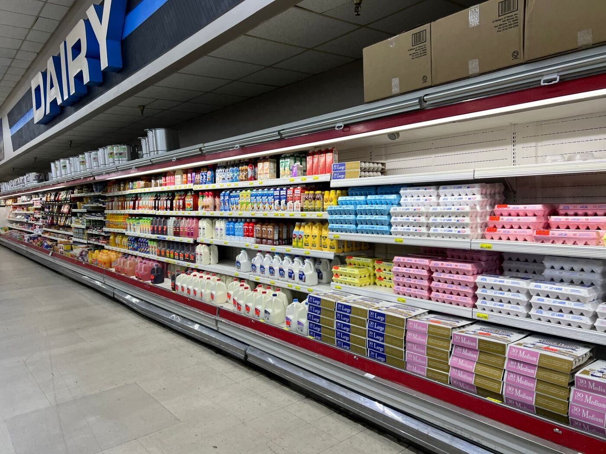

Walk the aisles 🛒
A peek at what you'll find inside. Selection changes daily, so come see what's fresh.

our specialty
The Meat Counter
Fresh-cut beef, pork and chicken, steaks, ribs and family packs at prices that make sense.

grill ready
Butcher Favorites
Marinated cuts, sausages, carne asada and party-size packs for cookouts.

picked daily
Fresh Produce
A big produce section with everyday fruits and veggies plus chiles, tomatillos and more.

stay chill
Dairy & Cold
Milk, eggs, cheese, crema, yogurt and the cold drinks you came in for.

the essentials
Grocery Aisles
Pantry staples, snacks, spices and Mexican groceries all in one stop.